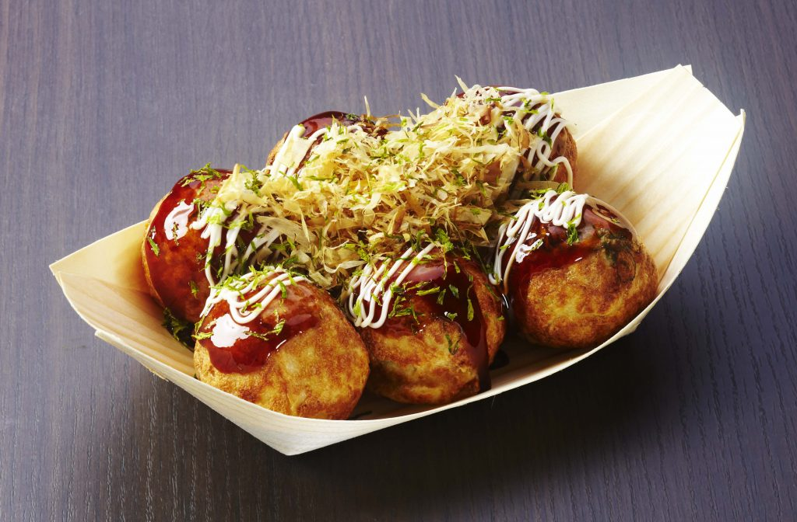

Takoyaki (たこ焼き or 蛸焼) is a ball-shaped Japanese snack or appetizer made of a wheat flour-based batter and cooked in a special molded pan. It is typically filled with minced or diced octopus (tako), tempura scraps (tenkasu), pickled ginger (beni shoga), and green onion (negi).

What is the taste of takoyaki?
Click the button so that you know the taste of takoyaki
Takoyaki has a soft texture and is very moist. You would feel like it melts inside your mouth as you chew. This salty snack has a savory oceanic flavor coming from the chewy octopus inside of it. You will notice a hint of kelp flavor from the dashi on the ball batter..